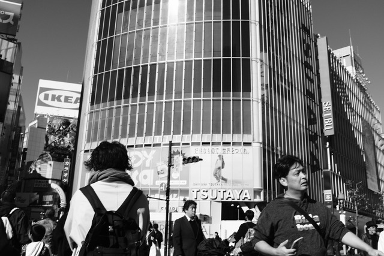
Shibuya2026-07-23
A number of people at Shibuya Crossing in Tokyo.
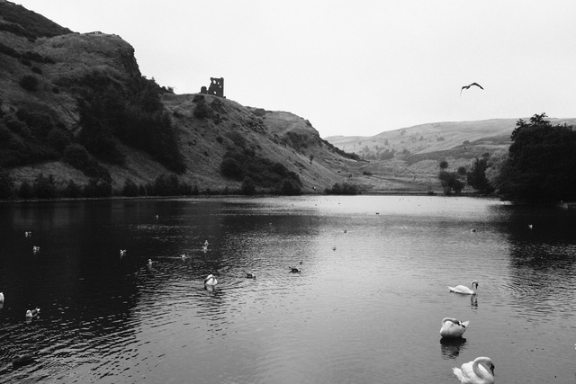
St Margaret's Loch2026-07-22
The ruins of St Anthony's Chapel, above St Margaret's Loch in Edinburgh.
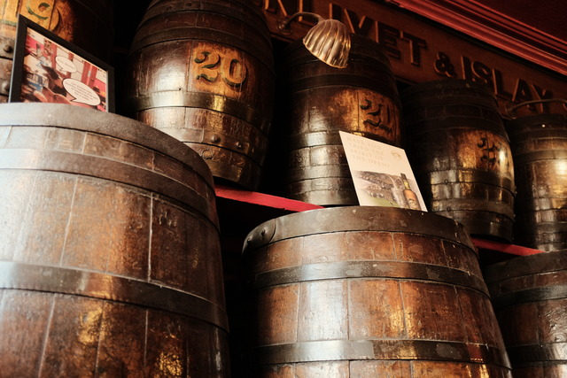
Barrels2026-07-21
Decorative barrels inside Kay's Bar in Edinburgh.
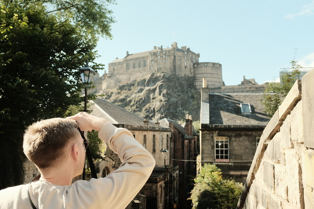
The Vennel2026-07-21
Edinburgh Castle seen from the Vennel Steps.
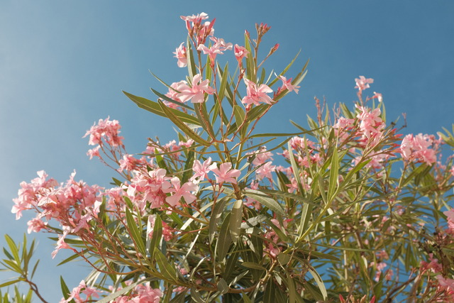
Oleanders2026-07-21
Oleanders in Saintes-Maries-de-la-Mer.
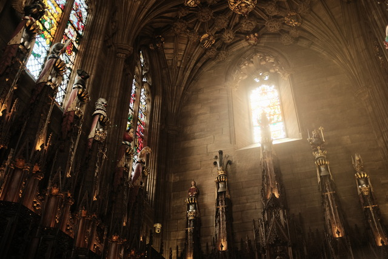
The Thistle Chapel2026-07-21
The interior of the Thistle Chapel at St Giles' Cathedral in Edinburgh.
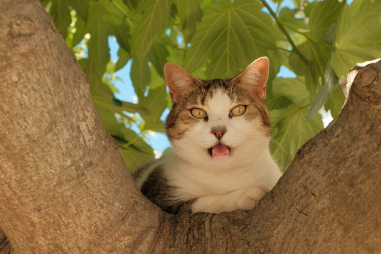
Meow2026-07-21
A cat in a tree at Saintes-Maries-de-la-Mer.
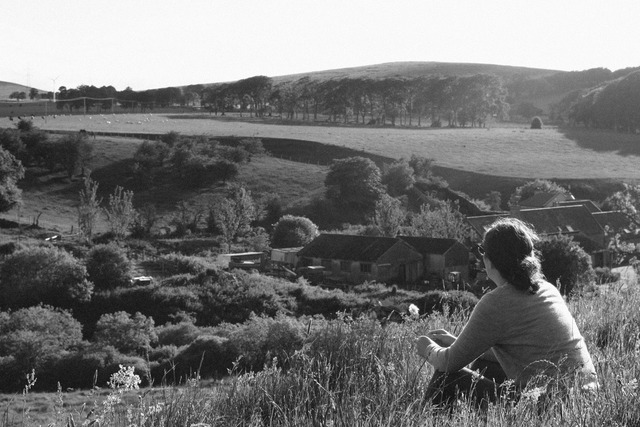
Leithhead2026-07-21
E sits and looks out over the farm at Leithhead.
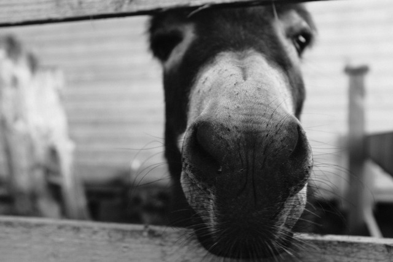
Mac2026-07-21
A friendly black donkey.
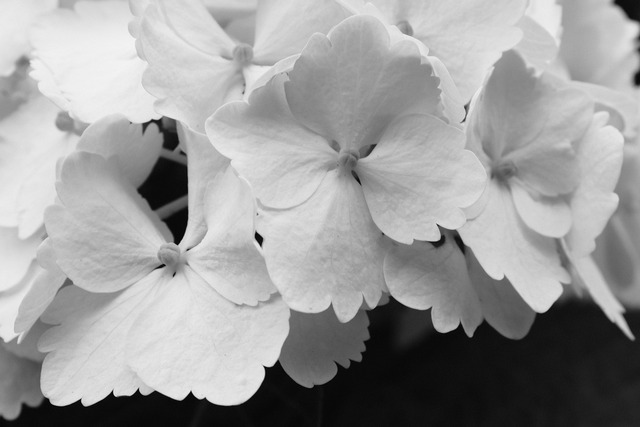
Blodau2026-07-19
Flowers outside a block of tenement flats in Edinburgh.
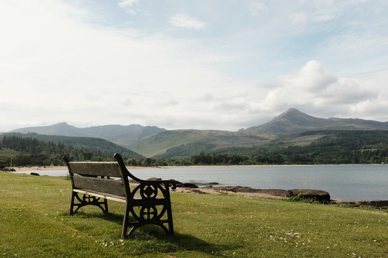
Goatfell2026-07-18
Goatfell seen from Brodick on Arran.
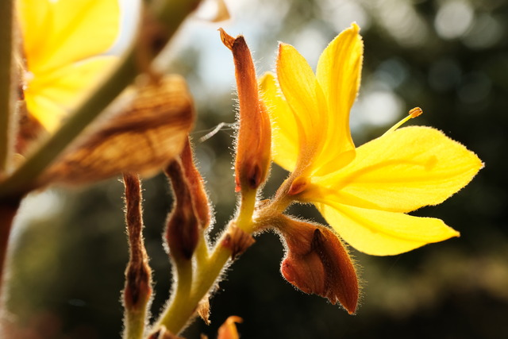
Brodick Castle Garden2026-07-18
A flowering plant in the garden of Brodick Castle on Arran.

Blodyn2026-07-18
A pale flower at Sain Ffagan near Cardiff.

Stirling Castle2026-07-16
One of many gargoyles on the exterior of the Royal Palace at Stirling Castle.

Frozen Nettle2026-07-15
A nettle near the Pentland Hills, covered in tiny, beautiful spindles of ice.

Concorde2026-07-15
The underside of the fuselage of a Concorde at the Museum of Flight in East Lothian.

Silt2026-07-15
Patterns left by the receding tide on Calgary Beach, Mull.

The Botanics2026-07-14
Some flowers and pollinators at the Botanical Gardens in Edinburgh.